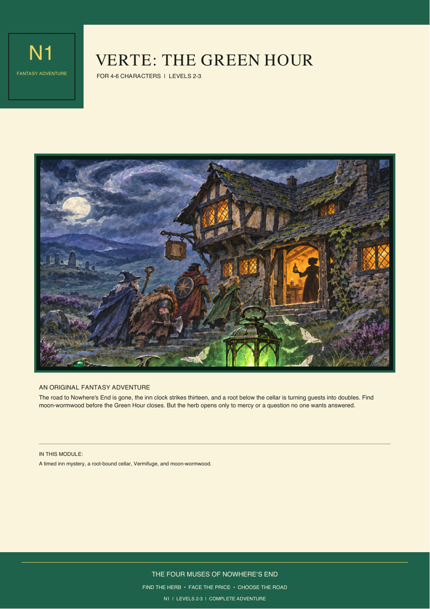
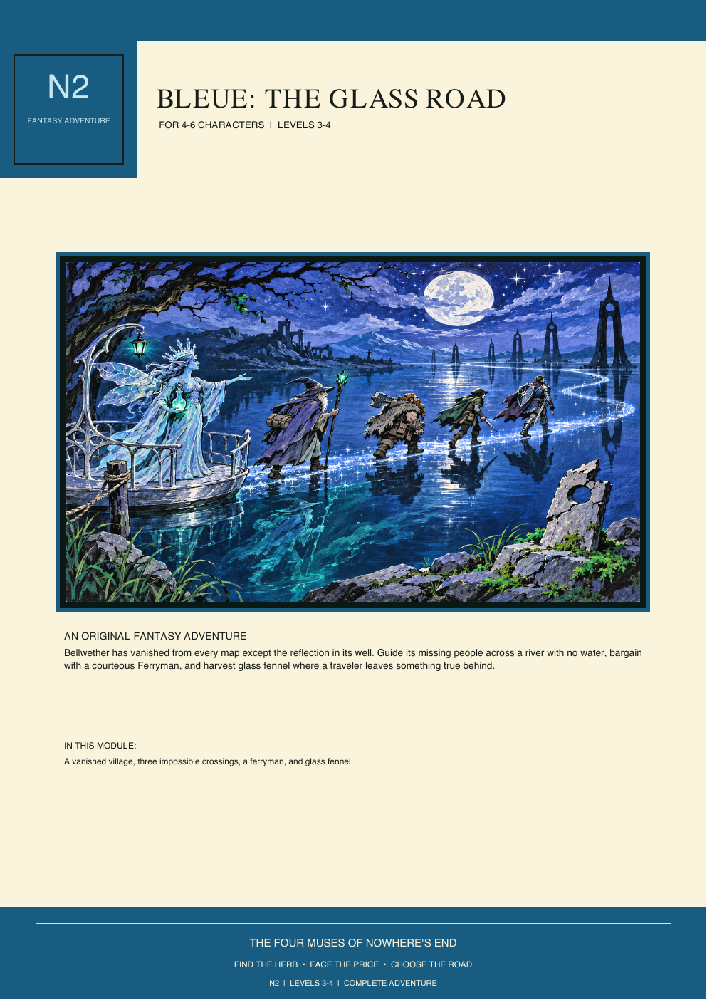
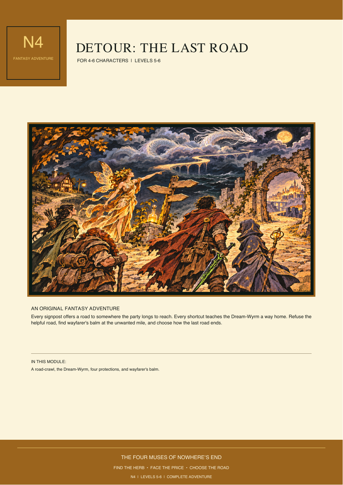

Verte: The Green Hour
A timed inn mystery in which moon-wormwood blooms only for mercy or truth.
Four linked, stand-alone fantasy adventures: harvest impossible herbs, bargain with faerie Muses, drink the resulting draughts, and decide which roads deserve to remain open.

A timed inn mystery in which moon-wormwood blooms only for mercy or truth.

Guide a vanished village across three boundaries and a river with no water.

Name a desire, survive a moving fey feast, and expose a bargain made in private.

Refuse the easy road, break the Dream-Wyrm's protections, and choose an ending.
One shared protocol and three scorecards for a newer DM, veteran DM, and production/accessibility reviewer. The goal is evidence-backed feedback, not a pass/fail popularity vote.